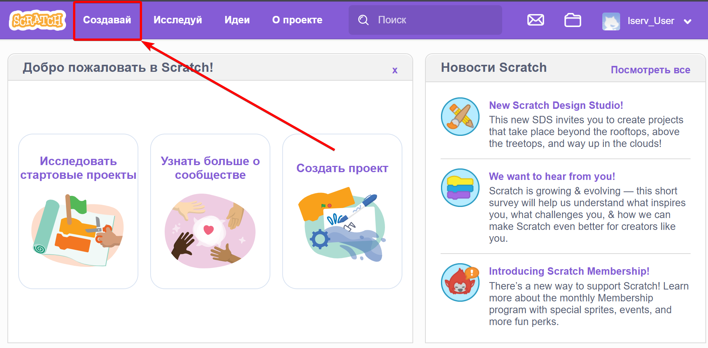
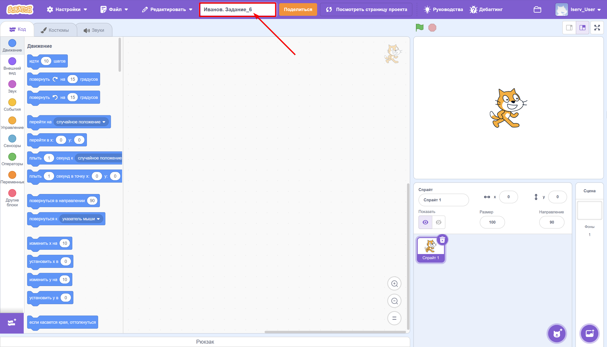
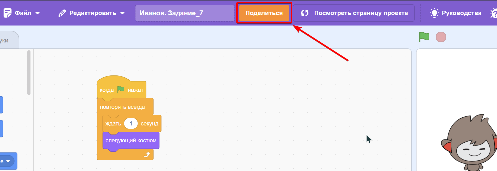
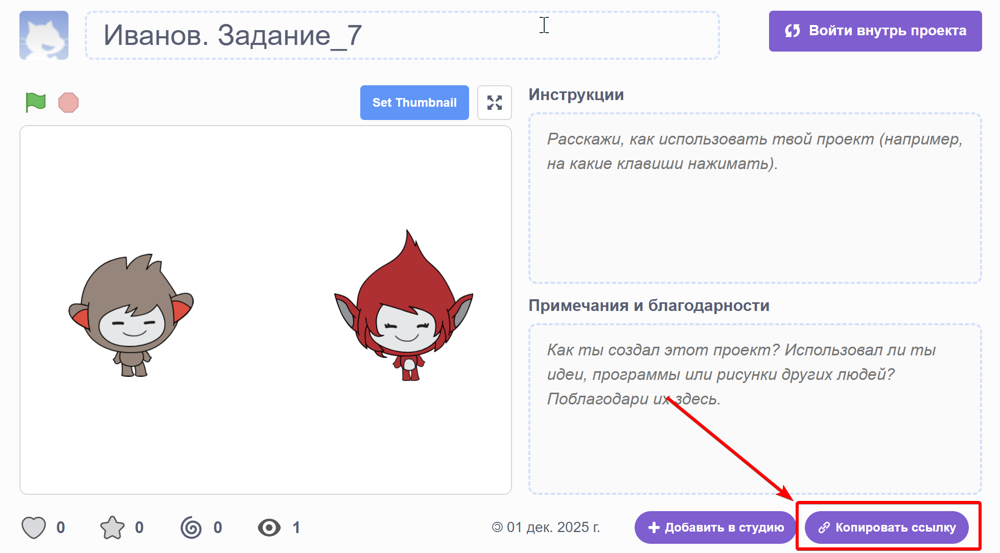
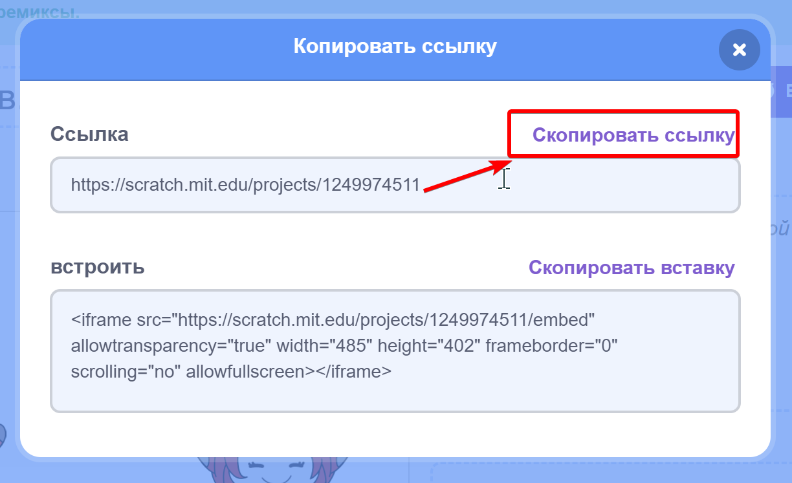
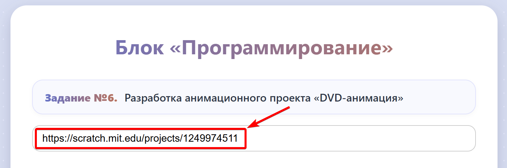
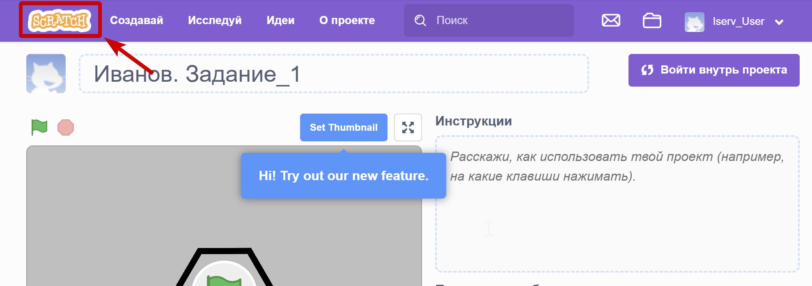

Перед выполнением заданий изучите инструкцию, представленную ниже.
Официальный сайт ScratchНажмите «Создавай», чтобы открыть новый проект.

Укажите название проекта в формате: Фамилия.Задание_Номер

Создание срайтов:
Написание скриптов:
Шаг 1: Нажмите «Поделиться», иначе ссылка не будет доступна.

Скопируйте ссылку:


Шаг 2: Вставьте ссылку в поле на платформе.

Шаг 3: Вернитесь на главный экран Scratch и начинайте следующее задание.
